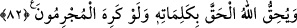

kaldırır, dumura uğratır.
Kâdî der ki: “Burada sihrin bir bozma ve göz boyama olduğuna, yapılanların hiçbir
hakikati bulunmadığına delil vardır.”
Kâdî’nin bu sözü tartışılır. Çünkü sihir, ehl-i hak nezdinde gerçekten sabittir. Sâdece
göz boyama ve böyle gösterme değildir. Sihrin tesirinin varlıkları başka türlü gösterme
şeklinde tezahür etmesi, sihrin hiçbir hakikati olmadığı mânâsına gelmez.
82. “Ve suçlular istemese de Allah sözleriyle hakkı açığa çıkaracaktır.”
“Ve suçlular istemese de Allah sözleriyle” emirleri ve hükümleriyle benim
getirdiğim “hakkı açığa çıkaracaktır.” sağlamlaştırıp kuvvetlendirecektir.
Suçlulardan maksad, büyücülerden olsun, başkalarından olsun büyük günah işlemekle
muttasıf kişilerdir.
Kaşifî der ki: Yâni noksanlıklardan münezzeh olan Hak Teâlâ yardım sözüne vefâ
gösterir. Böyle bir söz alan zat düşmanların hışım ve korkusundan uzaktır. Mesnevî-yi
Ma‘nevî’de bu mânâya işâret vardır:
Hak Teâlâ hasımların hışım ve gamından
Avam içinde olan evliyâsını nasıl terk eder?
Ay nûrunu saçar, köpek de havlar durur.
Köpek ayı kendisine otlak edinebilir mi?
Çöp, çöpçesine suyun üstünde akar gider.
Duru su da bulanmadan akar durur
Hz. Mustafa (s.a.), geceleyin ayı ikiye böler.
Ebû Leheb ise kininden saçma sapan şeyler söyler
Hz. Îsâ ölüyü diriltir,
Yahudi öfkesinden bıyığını yolar
Bu âyetlerde kalb Musa’sına, sır Harun’una, nefs Fir’avn’una ve onun sıfatlarına,
onlar arasında cereyan eden davete ve bunu kabul etmemeye işaret vardır. Kalb Musa’sı
ile sır Harun’u, nefsi, kelime-i tevhide ve Allah’a kulluğa davet ederken, nefis rablık
iddiasında bulunur. Kendi heva ve heveslerinden başka ilah tanımaz. Kendi arzında kalb
ve sırra hakimiyet ve tasarruf hakkı vermez. Allah Teâlâ ise daima kötülüğü emreden
yoldan çıkmış nefislerden ibaret olan heva ehli suçlular istemese de Lâ ilâhe illallah
kelimesiyle hakkı ortaya çıkaracaktır.
Hâfız der ki:
İsm-i a‘zam kendi işini görür, ey gönül sen hoş ol.